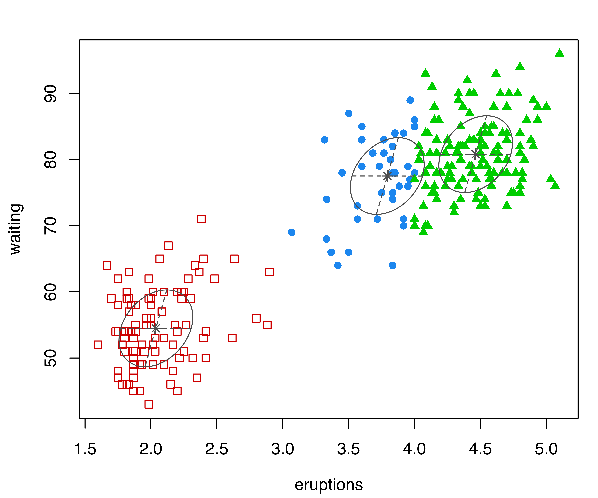
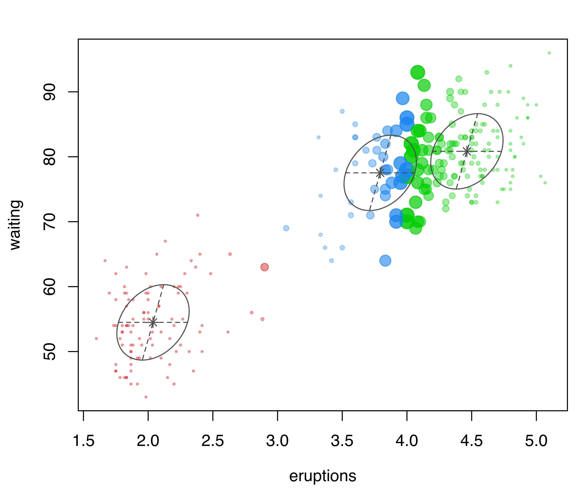

data("Snapper", package = "FSAdata")
x = Snapper[,1]
mod = Mclust(x, G = 4, modelNames = "V")
summary(mod, parameters = TRUE)
## ----------------------------------------------------
## Gaussian finite mixture model fitted by EM algorithm
## ----------------------------------------------------
##
## Mclust V (univariate, unequal variance) model with 4 components:
##
## log-likelihood n df BIC ICL
## -489.28 256 11 -1039.6 -1098
##
## Clustering table:
## 1 2 3 4
## 26 143 56 31
##
## Mixing probabilities:
## 1 2 3 4
## 0.098263 0.542607 0.177391 0.181739
##
## Means:
## 1 2 3 4
## 3.3631 5.4042 7.5761 8.9021
##
## Variances:
## 1 2 3 4
## 0.073383 0.408370 0.197323 2.8398436 Visualizing Gaussian Mixture Models
\[ \DeclareMathOperator{\Real}{\mathbb{R}} \DeclareMathOperator{\Proj}{\text{P}} \DeclareMathOperator{\Exp}{\text{E}} \DeclareMathOperator{\Var}{\text{Var}} \DeclareMathOperator{\var}{\text{var}} \DeclareMathOperator{\sd}{\text{sd}} \DeclareMathOperator{\cov}{\text{cov}} \DeclareMathOperator{\cor}{\text{cor}} \DeclareMathOperator{\range}{\text{range}} \DeclareMathOperator{\rank}{\text{rank}} \DeclareMathOperator{\ind}{\perp\hspace*{-1.1ex}\perp} \DeclareMathOperator{\CE}{\text{CE}} \DeclareMathOperator{\BS}{\text{BS}} \DeclareMathOperator{\ECM}{\text{ECM}} \DeclareMathOperator{\BSS}{\text{BSS}} \DeclareMathOperator{\WSS}{\text{WSS}} \DeclareMathOperator{\TSS}{\text{TSS}} \DeclareMathOperator{\BIC}{\text{BIC}} \DeclareMathOperator{\ICL}{\text{ICL}} \DeclareMathOperator{\CV}{\text{CV}} \DeclareMathOperator{\diag}{\text{diag}} \DeclareMathOperator{\se}{\text{se}} \DeclareMathOperator{\Cov}{\text{Cov}} \DeclareMathOperator{\boot}{\text{boot}} \DeclareMathOperator{\LRTS}{\text{LRTS}} \DeclareMathOperator{\Model}{\mathcal{M}} \DeclareMathOperator*{\argmin}{arg\min} \DeclareMathOperator*{\argmax}{arg\max} \DeclareMathOperator{\vech}{vech} \DeclareMathOperator{\tr}{tr} \]
Graphical displays are used extensively in previous chapters for showing clustering, classification, and density estimation. This chapter further discusses visualization methods for model-based clustering by illustrating fine tuning of plots available in mclust. In high-dimensional settings, in addition to marginal projections, several methods are presented for visualizing the clustering or classification structure on a subspace of reduced dimension.
6.1 Displays for Univariate Data
mclust models of univariate data can be visualized with mclust1Dplot().
Example 6.1 Additional graphs for the fish length data
Consider the dataset introduced in Example 2.1 on the length (in inches) of 256 snapper fish. The following code fits a four-component varying-variance ("V") GMM to this data with Mclust():
Classification and uncertainty plots for this model can be produced with the following code:
mclust1Dplot(x, what = "classification",
parameters = mod$parameters, z = mod$z,
xlab = "Fish length")
mclust1Dplot(x, what = "uncertainty",
parameters = mod$parameters, z = mod$z,
xlab = "Fish length")mclust1Dplot() for the GMM fit to the fishery data.
The resulting plots are shown in Figure 6.1. Classification errors and density for Mclust() models can also be displayed with mclust1Dplot(). Additional arguments can be specified for fine tuning, as described in help("mclust1Dplot"). MclustDA() and densityMclust() models can also be vizualized with mclust1Dplot() in the same way as described above.
6.2 Displays for Bivariate Data
mclust models fitted to bivariate data can be visualized with mclust2Dplot() and, for finer details, surfacePlot().
Example 6.2 Additional graphs for the Old Faithful data
In the following code, classification and uncertainty plots are produced for a Mclust() model estimated on the faithful dataset discussed in Example 3.4:
mod = Mclust(faithful)
mclust2Dplot(data = faithful, what = "classification",
parameters = mod$parameters, z = mod$z)
mclust2Dplot(data = faithful, what = "uncertainty",
parameters = mod$parameters, z = mod$z)


mclust2Dplot() for the model fitted with Mclust() to the faithful dataset.
The resulting plots are shown in Figure 6.2. In both plots, the ellipses are the multivariate analogs of the standard deviations for each mixture component. In the classification plot, points in different clusters are marked by different symbols and colors. In the uncertainty plot, larger symbols and more opaque shades correspond to higher levels of uncertainty. Data points on the boundaries between the two clusters on the top-right part of the plot are associated with higher values of clustering uncertainty.
Density or uncertainty for mclust models of bivariate data can also be displayed using surfacePlot(). This function invisibly returns the grid coordinates and the corresponding surface values employed for plotting, information that advanced users can use for further processing. For example, Figure 6.3 shows contour, image, perspective, and uncertainty plots for the model fitted to the faithful dataset:
surfacePlot(data = faithful, parameters = mod$parameters,
what = "density", type = "contour",
transformation = "log")
surfacePlot(data = faithful, parameters = mod$parameters,
what = "density", type = "image")
surfacePlot(data = faithful, parameters = mod$parameters,
what = "density", type = "persp")
surfacePlot(data = faithful, parameters = mod$parameters,
what = "uncertainty", type = "image",
transformation = "sqrt")

surfacePlot() for the faithful dataset. A logarithmic transformation is used for the density plot in panel (a), which is drawn as a contour surface. No transformation is applied to panels (b) and (c) which show, respectively, an image plot of the density surface and a 3D perspective plot. Panel (d) displays the image surface of the square root of the clustering uncertainty.
Note that plots in Figure 6.3 are computed over an evenly spaced grid of 200 points (the default) along each axis. More arguments are available for fine tuning; a detailed description can be found via help("surfacePlot").
6.3 Displays for Higher Dimensional Data
6.3.1 Coordinate Projections
Coordinate projections can be plotted in mclust with coordProj().
Example 6.3 Coordinate projections for the iris data
Consider the best (according to BIC) three-group GMM estimated on the iris dataset described in Example 3.13:
data("iris", package = "datasets")
mod = Mclust(iris[,1:4], G = 3)
summary(mod)
## ----------------------------------------------------
## Gaussian finite mixture model fitted by EM algorithm
## ----------------------------------------------------
##
## Mclust VEV (ellipsoidal, equal shape) model with 3 components:
##
## log-likelihood n df BIC ICL
## -186.07 150 38 -562.55 -566.47
##
## Clustering table:
## 1 2 3
## 50 45 55The following code produces projection plots for coordinates 2 and 4 of the iris data (see Figure 6.4).
coordProj(data = iris[,1:4], dimens = c(2,4), what = "classification",
parameters = mod$parameters, z = mod$z)
coordProj(data = iris[,1:4], dimens = c(2,4), what = "uncertainty",
parameters = mod$parameters, z = mod$z)
coordProj(data = iris[,1:4], dimens = c(2,4), what = "error",
parameters = mod$parameters, z = mod$z, truth = iris$Species)coordProj() for the variables Sepal.Width and Petal.Width from the iris dataset. Panel (a) shows the three-group model-based clustering, with the associated uncertainty in panel (b) and the classification errors in panel (c).
6.3.2 Random Projections
In the previous section, we looked at bivariate marginal coordinate projections that involve selected pairs of variables. Higher dimensional data prove to be much more difficult to visualize. A different approach, discussed in this section, consists of looking at the data from different random perspectives.
Two-dimensional random projections can be computed and plotted in mclust with randProj(). These projections are obtained by simulating a set of random orthogonal coordinates, each spanning a two-dimensional projection subspace. mclust provides a wrapper function randomOrthogonalMatrix() for generating orthogonal coordinates from a QR factorization of a matrix whose entries are generated randomly from a normal distribution (Heiberger 1978).
The following code produces a \(4 \times 2\) orthogonal matrix \(Q\) suitable for projecting the iris data:
For a discussion of methods for generating random orthogonal matrices, see Anderson, Olkin, and Underhill (1987).
The data \(\boldsymbol{X}\) can be projected onto a subspace spanned by orthogonal coordinates \(\boldsymbol{\beta}\) by computing \(\boldsymbol{X}\boldsymbol{\beta}\). It can be shown that for a given GMM with estimated means \(\widehat{\boldsymbol{\mu}}_k\) and covariance matrices \(\widehat{\boldsymbol{\Sigma}}_k\) (\(k=1,\dots,G\)), the parameters of the Gaussian components on the projection subspace are \(\boldsymbol{\beta}{}^{\!\top}\widehat{\boldsymbol{\mu}}_k\) and \(\boldsymbol{\beta}{}^{\!\top}\widehat{\boldsymbol{\Sigma}}_k \boldsymbol{\beta}\), respectively. Finally, note that the number of two-dimensional projections generated by randProj() depends on the number of values provided through the optional argument seeds.
Example 6.4 Random projections for the iris data
Consider again the three-group GMM for the iris dataset from the previous subsection. The following code produces four random projections of the iris data with corresponding cluster ellipses and model classification:
randProj(data = iris[,1:4], seeds = c(1,13,79,201),
what = "classification",
parameters = mod$parameters, z = mod$z)iris dataset. Each plot was created with randProj() with a different seed.
The resulting plots are shown in Figure 6.5. Since the basis of each projection is random, to make the results reproducible we fixed the seeds using the seeds argument in the randProj() function call. If not provided, each call of randProj() will result in a different projection using a system-generated seed.
6.3.3 Discriminant Coordinate Projections
Both the coordinate and random projection plots decribed above %are intended to display GMMs in different subspaces, without attempting to select coordinates based on any specific visual criteria. By contrast, discriminant coordinates or crimcoords (Gnanadesikan 1977; Bernard Flury 1997) are specifically designed to reveal group separation, and they can be used both in the case of known groups and of groups identified by a clustering model or algorithm.
Consider a data matrix \(\boldsymbol{X}\) of dimension \(n \times d\), for \(n\) observations on \(d\) variables, with an associated group structure composed either by \(G\) known classes or estimated clusters. Let \(\boldsymbol{\bar{x}}\) be the overall sample mean vector, and \(\boldsymbol{\bar{x}}_k\) and \(\boldsymbol{S}_k\), respectively, the group-specific sample mean vector and sample covariance matrix on \(n_k\) observations (\(k = 1, \dots, G\); \(n = \sum_{k=1}^G n_k\)). Then, the \(d \times d\) between-groups covariance matrix \[ \boldsymbol{B}= \frac{1}{G} \sum_{k=1}^G n_k (\boldsymbol{\bar{x}}_k - \boldsymbol{\bar{x}})(\boldsymbol{\bar{x}}_k - \boldsymbol{\bar{x}}){}^{\!\top} \] represents the group separation, while the \(d \times d\) pooled within-groups covariance matrix \[ \boldsymbol{W}= \frac{1}{n} \sum_{k=1}^G (n_k - 1) \boldsymbol{S}_k. \] represents the within-group dispersion.
From the point of view of searching for the maximal separation of groups, the optimal projection subspace is given by the set of linear transformations of the original variables that maximizes the ratio of the between-groups covariance to the pooled within-groups covariance. The basis of this projection subspace is spanned by the eigenvectors \(\boldsymbol{v}_i\) corresponding to the non-zero eigenvalues of the generalized eigenvalue problem: \[\begin{align*} \boldsymbol{B}\boldsymbol{v}_i & = \gamma_i \boldsymbol{W}\boldsymbol{v}_i, \\ \boldsymbol{v}{}^{\!\top}_i \boldsymbol{W}\boldsymbol{v}_j & = 1 \qquad \text{if $i=j$, and $0$ otherwise.} \end{align*}\]
The discriminant coordinates or crimcoords are computed as \(\boldsymbol{X}\boldsymbol{V}\), where \(\boldsymbol{V}\equiv [\boldsymbol{v}_1, \dots, \boldsymbol{v}_p]\) is the \(d \times p\) matrix of \(p = {\min(d,G-1),r}\) eigenvectors, where \(r\) is the number of non-zero eigenvalues. The directions of the discriminant subspace spanned by \(\boldsymbol{V}\) are in decreasing order of effectiveness in identifying the separation among groups as expressed by the associated eigenvalues, \(\gamma_1 \ge \gamma_2 \ge \dots \ge \gamma_p > 0\).
Alternatively, unbiased-sample estimates may be used for these computatons: \(\frac{G}{G-1}\boldsymbol{B}\) for the between-groups covariance and \(\frac{n}{n-G}\boldsymbol{W}\) for the within-groups covariance. These would change the eigenvalues and eigenvectors by a constant of proportionality, equal to \(n(G-1)/(G(n-G))\) and \(\sqrt{n/(n-G)}\), respectively.
The method described above is implemented in the function crimcoords() available in mclust. This requires the arguments data, a matrix or data frame of observed data, and classification, a vector or a factor giving the groups classification, either known class labels or estimated cluster assignments. Optional arguments are numdir, an integer value specifying the number of directions to return (by default all those corresponding to non-zero eigenvalues), and unbiased, a logical value specifying whether unbiased estimates should be used (by default set to FALSE so that MLE estimates are used). summary() and plot() methods are available to show the estimated projections basis and the corresponding data projection.
Example 6.5 Discriminant coordinates for the iris data
Discriminant coordinates of the iris data are computed and plotted with the following code:
plot(crimcoords(iris[,1:4], mod$classification))iris dataset.
with the resulting plot shown in Figure 6.6.
Example 6.6 Discriminant coordinates for the thyroid disease data
Consider the data introduced in Example 3.2 from the Thyroid Disease Data from the UCI Repository (Dua and Graff 2017). We compute the discriminant coordinates with crimcoords() using the thyroid diagnosis as the classification variable, and then print the computed eigenvectors and eigenvalues using the summary() function:
data("thyroid", package = "mclust")
CRIMCOORDS = crimcoords(thyroid[,-1], thyroid$Diagnosis)
summary(CRIMCOORDS)
## -------------------------------------
## Discriminant coordinates (crimcoords)
## -------------------------------------
##
## Estimated basis vectors:
## crimcoords1 crimcoords2
## RT3U -0.025187 -0.0019885
## T4 0.307600 0.1042255
## T3 0.116701 0.4371644
## TSH -0.038588 0.1484593
## DTSH -0.073398 0.0745668
##
## crimcoords1 crimcoords2
## Eigenvalues 275.143 52.473
## Cum. % 83.983 100.000The associated plot() method can then be used for plotting the data points projected onto the discriminant coordinates subspace. In the following code we also add a projection of the corresponding group-centroids:
plot(CRIMCOORDS)
points(CRIMCOORDS$means %*% CRIMCOORDS$basis, pch = 3, cex = 1.5, lwd = 2)
legend("topright", legend = levels(thyroid$Diagnosis), inset = 0.02,
col = mclust.options("classPlotColors")[1:3],
pch = mclust.options("classPlotSymbols")[1:3])thyroid dataset. Group centroids are represented with the \(+\) symbol.
The resulting plot is shown in Figure 6.7. It is interesting to note that patients with normal thyroid function line up along the left arm, while the remaining patients with hyperthyroidism or hypothyroidism line up along the right arm.
An alternative method for selecting an informative basis of the projection subspace is discussed in Scrucca and Serafini (2019). They use a projection pursuit approach that maximizes an approximation to the negative entropy for Gaussian mixtures to determine coordinates for display.
6.4 Visualizing Model-Based Clustering and Classification on Projection Subspaces
When the number of clustering or classification features is larger than two, the marginal or random projections described in Section 6.3 are not guaranteed to produce displays that reveal the underlying structure of the data. Discriminant coordinates (Section 6.3.3) provide an attempt at showing maximal separation of groups without explicitly assuming any specific model.
With the aim of visualizing the clustering structure and geometric characteristics induced by a GMM, Scrucca (2010),Scrucca:2014 proposed a methodology for projecting the data onto subspaces of reduced dimension. These subspaces are spanned by a set of linear combinations of the original variables, called GMMDR directions (“DR” for Dimension Reduction). They are obtained through a procedure that looks for the smallest subspace that captures the clustering information contained in the data. Thus, the goal is to identify those directions where the cluster means \(\boldsymbol{\mu}_k\) and/or the cluster covariances \(\boldsymbol{\Sigma}_k\) vary as much as possible, provided that each direction is orthogonal to the others in a transformed space. These methods are implemented in the mclust functions MclustDR() and MclustDRsubsel().
6.4.1 Projection Subspaces for Visualizing Cluster Separation
The variation among the cluster means is captured by the \(d \times d\) matrix \[ \mathbb{\mathcal{B}}= \sum_{k=1}^G \pi_k (\boldsymbol{\mu}_k - \boldsymbol{\mu})(\boldsymbol{\mu}_k - \boldsymbol{\mu}){}^{\!\top}, \tag{6.1}\] where \(\boldsymbol{\mu}= \sum_{k=1}^G \pi_k \boldsymbol{\mu}_k\) is the marginal mean vector. The projection subspace associated with this variation is spanned by the eigenvectors \(\boldsymbol{v}_i\) corresponding to the non-zero eigenvalues of the following generalized eigenvalue problem: \[ \begin{align} \mathbb{\mathcal{K}}_{\mu}\boldsymbol{v}_i &= \gamma_i \boldsymbol{\Sigma}\boldsymbol{v}_i, \\ \boldsymbol{v}{}^{\!\top}_i \boldsymbol{\Sigma}\boldsymbol{v}_j &= 1 \qquad \text{if $i=j$, and $0$ otherwise,} \nonumber \end{align} \tag{6.2}\] in which \[ \mathbb{\mathcal{K}}_{\mu}= \mathbb{\mathcal{B}}\boldsymbol{\Sigma}^{-1} \mathbb{\mathcal{B}} \tag{6.3}\] is the kernel matrix associated with the cluster means, and \[ \boldsymbol{\Sigma}= \frac{1}{n} \sum_{i=1}^{n} (\boldsymbol{x}_i - \boldsymbol{\mu})(\boldsymbol{x}_i - \boldsymbol{\mu}){}^{\!\top} \tag{6.4}\] is the marginal covariance matrix. \(\boldsymbol{\Sigma}\) is symmetric positive definite, and \(\mathbb{\mathcal{K}}_{\mu}\) is also symmetric with nonnegative eigenvalues, of which \(p = \min(d,G-1)\) are non-zero. The GMMDR variables \(\boldsymbol{X}\boldsymbol{\beta}\) are the projection of the \(n \times d\) matrix \(\boldsymbol{X}\) onto the subspace spanned by \(\boldsymbol{\beta}\equiv [\boldsymbol{v}_1, \dots, \boldsymbol{v}_p]\). The basis vectors \(\boldsymbol{v}_i\) are orthogonal in the space transformed by \(\boldsymbol{\Sigma}\).
Example 6.7 Visualizing wine data clustering
In this example, we consider the Italian wines from the package gclus (Hurley 2019) data previously discussed in Example 3.3, where the estimated VVE model with three components was selected by BIC. We first obtain the Mclust() model for this data and the confusion matrix for the resulting classification:
data("wine", package = "gclus")
Class = factor(wine$Class, levels = 1:3,
labels = c("Barolo", "Grignolino", "Barbera"))
X = data.matrix(wine[,-1])
mod = Mclust(X, G = 3, modelNames = "VVE")
table(Class, Cluster = mod$classification)
## Cluster
## Class 1 2 3
## Barolo 59 0 0
## Grignolino 0 69 2
## Barbera 0 0 48MclustDR() is then applied to obtain a projection subspace:
drmod = MclustDR(mod, lambda = 1)
summary(drmod)
## -----------------------------------------------------------------
## Dimension reduction for model-based clustering and classification
## -----------------------------------------------------------------
##
## Mixture model type: Mclust (VVE, 3)
##
## Clusters n
## 1 59
## 2 69
## 3 50
##
## Estimated basis vectors:
## Dir1 Dir2
## Alcohol 0.13399009 0.19209123
## Malic -0.03723778 0.06424412
## Ash -0.01313103 0.62738796
## Alcalinity -0.04299147 -0.03715437
## Magnesium -0.00053971 0.00051772
## Phenols -0.13507235 -0.04687991
## Flavanoids 0.51323644 -0.13391186
## Nonflavanoid 0.68462875 -0.61863302
## Proanthocyanins -0.07506153 -0.04652587
## Intensity -0.08855450 0.04877118
## Hue 0.28941727 -0.39564601
## OD280 0.36197696 -0.00779361
## Proline 0.00070724 0.00075867
##
## Dir1 Dir2
## Eigenvalues 1.6189 1.292
## Cum. % 55.6156 100.000Setting the tuning parameter \(\lambda\) to \(1\) (the default in MclustDR()) results in a projection subspace for maximal separation of clusters. Other options that incorporate the variation in covariances are discussed in Section 6.4.2.
Recall that the basis from Equation 6.2 consists of \(p = \min(d, G-1)\) directions, where \(d\) is the number of variables and \(G\) the number of mixture components or clusters. In this example, there are \(d=13\) features and \(G=3\) clusters, so the reduced subspace is two-dimensional. The projected data are shown in Figure 6.8 (a), obtained with the code:
plot(drmod, what = "contour")On the same subspace we can also plot the uncertainty boundaries corresponding to the MAP classification (see Figure 6.8 (b)):
plot(drmod, what = "boundaries")MclustDR() for the wine dataset.
Although the GMMDR subspaces discussed in this section are not guaranteed to show cluster separation, they do provide useful clustering information in many cases of practical interest. When there are only two clusters, there is just one basis vector and the projections will be univariate.
6.4.2 Incorporating Variation in Covariances
Analogous to the scenario for cluster means discussed in the previous section, the variation among the cluster covariances is captured by the \(d \times d\) kernel matrix \[ \mathbb{\mathcal{K}}_{\Sigma}= \sum_{k=1}^G \pi_k (\boldsymbol{\Sigma}_k - \bar{\boldsymbol{\Sigma}}) \boldsymbol{\Sigma}^{-1} (\boldsymbol{\Sigma}_k - \bar{\boldsymbol{\Sigma}}){}^{\!\top}, \] where \[ \bar{\boldsymbol{\Sigma}} = \sum_{k=1}^G \pi_k \boldsymbol{\Sigma}_k \] is the pooled within-cluster covariance matrix, and \(\boldsymbol{\Sigma}\) is the marginal covariance matrix in Equation 6.4.
The variation in both means and variances can then be combined, and the associated projection subspace is spanned by the eigenvectors \(\boldsymbol{v}_i\) that solve the generalized eigenvalue problem \[ \begin{align} \big(\lambda \mathbb{\mathcal{K}}_{\mu}+ (1-\lambda) \mathbb{\mathcal{K}}_{\Sigma}\big) \boldsymbol{v}_i &= \gamma_i \boldsymbol{\Sigma}\boldsymbol{v}_i, \\ \boldsymbol{v}{}^{\!\top}_i \boldsymbol{\Sigma}\boldsymbol{v}_j &= 1 \qquad \text{if $i=j$, and $0$ otherwise,} \end{align} \tag{6.5}\] in which \(\mathbb{\mathcal{K}}_{\mu}\) is the kernel matrix Equation 6.3 associated with the cluster means in Section 6.4.1, and \(\lambda \in [0,1]\) is a parameter controlling the relative contributions of the mean and covariance variations (Scrucca 2014).
For larger values of \(\lambda\), the estimated directions will tend to focus on differences in location. For \(\lambda = 1\) (the default in MclustDR()), differences in class covariances are ignored, and the most discriminant directions (those that show maximal separation among classes) are recovered (Section 6.4.1). For \(\lambda = 0.5\), the two types of information are equally weighted (Scrucca 2010). When \(\lambda < 1\), the GMMDR variables \(\boldsymbol{X}\boldsymbol{\beta}\) are the projection of the \(n \times d\) matrix \(\boldsymbol{X}\) onto the subspace spanned by \(\boldsymbol{\beta}\equiv [\boldsymbol{v}_1, \dots, \boldsymbol{v}_d]\), which has the same dimension as the data, regardless of the number of GMM components. Note that each generalized eigenvalue \(\gamma_i\) is the sum of contributions from both the means and the variances: \[
\gamma_i = \gamma_i \boldsymbol{v}_i{}^{\!\top}\boldsymbol{\Sigma}\boldsymbol{v}_i = \lambda \boldsymbol{v}_i{}^{\!\top}\mathbb{\mathcal{K}}_{\mu}\boldsymbol{v}_i +
(1-\lambda) \boldsymbol{v}_i{}^{\!\top}\mathbb{\mathcal{K}}_{\Sigma}\boldsymbol{v}_i, ~~ i = 1, \dots, d.
\]
Example 6.8 Visualizing iris data clustering
As an example of the above methodology, consider again the three-group model for the iris dataset described in Section 6.3. Once a GMM model has been fitted, the subspace estimated by MclustDR() can be used for plots that attempt to capture most of the clustering structure:
mod = Mclust(iris[, 1:4], G = 3)
drmod = MclustDR(mod, lambda = .5)
summary(drmod)
## -----------------------------------------------------------------
## Dimension reduction for model-based clustering and classification
## -----------------------------------------------------------------
##
## Mixture model type: Mclust (VEV, 3)
##
## Clusters n
## 1 50
## 2 45
## 3 55
##
## Estimated basis vectors:
## Dir1 Dir2 Dir3 Dir4
## Sepal.Length 0.14546 -0.220270 0.65191 -0.43651
## Sepal.Width 0.52097 0.097857 0.25527 0.57873
## Petal.Length -0.62095 -0.293850 -0.44704 0.46137
## Petal.Width -0.56732 0.924963 0.55678 -0.51153
##
## Dir1 Dir2 Dir3 Dir4
## Eigenvalues 0.94861 0.62354 0.074295 0.032765
## Cum. % 56.49126 93.62436 98.048774 100.000000The basis vectors spanning the reduced subspace are available through the summary() method for MclustDR(). These basis vectors are expressed as linear combinations of the original features, ordered by importance via the associated generalized eigenvalues Equation 6.5. In this case the first two directions account for most of the clustering structure. A plot of the eigenvalues, shown in Figure 6.9, is obtained with the following code:
plot(drmod, what = "evalues")MclustDR() and the corresponding contributions from means and variances for the 3-group model-based clustering of the iris dataset.
According to the previous discussion on the contributions to the generalized eigenvalues, we would expect to see a separation among the groups along the first two directions only, with the first associated with differences in location, and the second associated with differences in spread. This is confirmed by a scatterplot matrix of data projected onto the estimated subspace (see Figure 6.10) obtained as follows:
plot(drmod, what = "pairs")iris data projected onto the principal eigenvectors from MclustDR(). The colors and symbols correspond to the 3-group model-based clustering.
As already mentioned, the last two directions appear negligible in this example. This may be further investigated by applying the greedy subset selection step proposed in Scrucca (2010, sec. 3) that applies the subset selection method of Raftery and Dean (2006) to prune the subset of GMMDR features:
sdrmod = MclustDRsubsel(drmod, verbose = TRUE)
##
## Cycle 1 ...
##
## Variable Model G BIC BIC.dif
## 1 Dir1 E 3 -374.60 187.035
## 2 Dir2 EEI 4 -315.66 45.242
## 3 Dir3 VVE 3 -395.01 37.666
##
## Cycle 2 ...
##
## Variable Model G BIC BIC.dif
## 1 Dir1 E 3 -354.64 186.167
## 2 Dir2 VVI 3 -294.07 47.343
## 3 Dir3 VVE 3 -389.47 21.632
summary(sdrmod)
## -----------------------------------------------------------------
## Dimension reduction for model-based clustering and classification
## -----------------------------------------------------------------
##
## Mixture model type: Mclust (VVE, 3)
##
## Clusters n
## 1 50
## 2 49
## 3 51
##
## Estimated basis vectors:
## Dir1 Dir2 Dir3
## Sepal.Length 0.10835 -0.18789 0.71035
## Sepal.Width 0.54164 0.10527 0.25902
## Petal.Length -0.65930 -0.30454 -0.43979
## Petal.Width -0.51010 0.92783 0.48465
##
## Dir1 Dir2 Dir3
## Eigenvalues 0.94257 0.64868 0.03395
## Cum. % 57.99696 97.91101 100.00000The subset selection chooses three directions and essentially the first three previously obtained:
In the following plots, we use the default argument dimens = c(1, 2) to project onto the first two GMMDR directions, which are of most interest for visualizing the clustering structure:
The first command draws a bivariate contour plot of the mixture component densities, the second command draws the classification boundaries based on the MAP principle, while the last command draws a scatterplot showing uncertainty boundaries (panels (a), (b), and (c) in Figure 6.11).
MclustDRsubsel() for the 3-group model-based clustering of the iris dataset. Panel (d) shows the conditional densities along the first GMMDR direction.
We can also produce a plot of the densities conditional on the estimated cluster membership for the first GMMDR direction as follows (panel (d) in Figure 6.11):
plot(sdrmod, what = "density")Other plots can be obtained via the argument what, and fine tuning for some parameters is also available; see help("plot.MclustDR") for a comprehensive list and examples.
6.4.3 Projection Subspaces for Classification
The approach discussed in the previous sections for clustering has been further extended to the case of supervised classification (Scrucca 2014). In this scenario, the fact that classes are known and that they can be made up of one or more mixture components must be taken into account.
Example 6.9 Visualizing Swiss banknote classification
The banknote dataset containing six physical measurements of a sample of Swiss Franc bills is given in Tables 1.1 and 1.2 of Bernhard Flury and Riedwyl (1988). One hundred banknotes were classified as genuine and 100 as counterfeits.
We fit a MclustDA() classification model to this data:
data("banknote", package = "mclust")
mod = MclustDA(data = banknote[, -1], class = banknote$Status)
summary(mod)
## ------------------------------------------------
## Gaussian finite mixture model for classification
## ------------------------------------------------
##
## MclustDA model summary:
##
## log-likelihood n df BIC
## -646.08 200 67 -1647.1
##
## Classes n % Model G
## counterfeit 100 50 EVE 2
## genuine 100 50 XXX 1
##
## Training confusion matrix:
## Predicted
## Class counterfeit genuine
## counterfeit 100 0
## genuine 0 100
## Classification error = 0
## Brier score = 0We then apply MclustDR() to obtain a projection subspace:
drmod = MclustDR(mod, lambda = 0.5)
summary(drmod)
## -----------------------------------------------------------------
## Dimension reduction for model-based clustering and classification
## -----------------------------------------------------------------
##
## Mixture model type: MclustDA
##
## Classes n Model G
## counterfeit 100 EVE 2
## genuine 100 XXX 1
##
## Estimated basis vectors:
## Dir1 Dir2 Dir3 Dir4 Dir5 Dir6
## Length -0.10139 -0.328225 -0.797068 0.033629 -0.3174275 0.085062
## Left -0.21718 -0.305014 0.303111 0.893349 0.3700659 -0.565410
## Right 0.29222 -0.018401 0.495891 -0.407413 -0.8612986 0.480799
## Bottom 0.57591 0.445352 -0.120173 0.034595 0.0043174 -0.078640
## Top 0.57542 0.385535 -0.100865 0.103623 0.1359128 0.625902
## Diagonal -0.44089 0.672250 0.047784 0.151252 -0.0443255 0.209691
##
## Dir1 Dir2 Dir3 Dir4 Dir5 Dir6
## Eigenvalues 0.87242 0.55373 0.48546 0.13291 0.053075 0.027273
## Cum. % 41.05755 67.11689 89.96377 96.21866 98.716489 100.000000A plot of the generalized eigenvalues associated with the estimated directions is obtained using:
plot(drmod, what = "evalues")MclustDR() applied to a classification model for the banknote data.
The graph in Figure 6.12 suggests that the first two directions mainly contain information on class separation, with the remaining dimensions showing differences in variances.
A pairs plot of the data points projected along these directions seems to suggest that a further reduction could be achieved by selecting a subset of them (see Figure 6.13):
plot(drmod, what = "pairs", lower.panel = NULL)
clPairsLegend(0.1, 0.4, class = levels(drmod$classification),
col = mclust.options("classPlotColors")[1:2],
pch = mclust.options("classPlotSymbols")[1:2],
title = "Swiss banknote data")
MclustDR() for the banknote dataset.
This option can be investigated by applying the subset selection procedure described in Scrucca (2010) with the code:
sdrmod = MclustDRsubsel(drmod, verbose = TRUE)
##
## Cycle 1 ...
##
## Variable Model G BIC BIC.dif
## 1 Dir1 E|X 2|1 -527.10 206.74
## 2 Dir2 EEE|XXX 2|1 -667.69 192.65
##
## Cycle 2 ...
##
## Variable Model G BIC BIC.dif
## 1 Dir1 E|X 2|1 -528.93 204.88
## 2 Dir2 EEE|XXX 2|1 -667.66 194.51
summary(sdrmod)
## -----------------------------------------------------------------
## Dimension reduction for model-based clustering and classification
## -----------------------------------------------------------------
##
## Mixture model type: MclustDA
##
## Classes n Model G
## counterfeit 100 EEE 2
## genuine 100 XXX 1
##
## Estimated basis vectors:
## Dir1 Dir2
## Length -0.10552 -0.328204
## Left -0.22054 -0.304765
## Right 0.29083 -0.018957
## Bottom 0.57981 0.444505
## Top 0.57850 0.384658
## Diagonal -0.42989 0.673420
##
## Dir1 Dir2
## Eigenvalues 0.85929 0.53687
## Cum. % 61.54666 100.00000The subset selection procedure identifies only two directions as being important, essentially the first two directions previously obtained:
Summary plots can then be obtained on the 2-dimensional estimated subspace as follows:
MclustDRsubsel() for the banknote dataset.
These plots show, respectively, a contour plot of the mixture component densities for each class, and the classification regions based on the MAP principle (see Figure 6.14). The group of counterfeit banknotes is clearly composed of two distinct subgroups, whereas the genuine banknotes appear as a homogeneous group with the presence of an outlying note.
6.4.4 Relationship to Other Methods
Approaches analogous to projection subspaces have been proposed for the cases of finite mixtures of multivariate \(t\) distributions (Morris, McNicholas, and Scrucca 2013), mixtures of shifted asymmetric Laplace distributions (Morris and McNicholas 2013), and generalized hyperbolic mixtures (Morris and McNicholas 2016).
The MclustDR() directions, obtained using the generalized eigen-decompositions discussed in Section 6.4.1 and in Section 6.4.2 for the specific case \(\lambda = 1\) in Equation 6.5, are essentially equivalent to the discriminant coordinates or crimcoords described in Section 6.3.3 for GMMs with one mixture component per group. Within mclust, this applies to Mclust() clustering models, EDDA classification models, and MclustDA classification models with one component (but possibly different covariance structures) per class.
6.5 Using ggplot2 with mclust
All of the plots produced by mclust and discussed so far use the base plotting system in R. There are historical reasons for this, but it also helps achieve one of the main goals of the package, namely to provide simple, fast, accurate, and nice-looking plots without introducing further dependencies on other packages.
ggplot2 is a popular R package for data visualization based on the Grammar of Graphics (Wilkinson 2005). The ggplot2 package facilitates creation of production-quality statistical graphics. For a comprehensive introduction, see Wickham (2016). Experienced R users can easily produce ggplot2 plots using the information contained in the objects returned by mclust functions, by collecting them in a data frame and then (gg)plotting them using a suitable plot
Example 6.10 ggplot2 graphs of Old Faithful data clustering
As a first example, consider the following code which produces the usual classification plot (see Figure 6.15):
mod = Mclust(faithful)
DF = data.frame(mod$data, cluster = factor(mod$classification))
library("ggplot2")
ggplot(DF, aes(x = eruptions, y = waiting,
colour = cluster, shape = cluster)) +
geom_point()faithful data with points marked according to the GMM clusters identified by Mclust.
A more complex example involves plotting the table of BIC values (see Figure 6.16). In this case, we need to convert the object into a data.frame (or a tibble in tidyverse — see Wickham et al. (2019)) by reshaping it from the “wide” to the “long” format. The latter step can be accomplished in several ways; here, we use the tidyr R package (Wickham and Henry 2022):
library("tidyr")
DF = data.frame(mod$BIC[], G = 1:nrow(mod$BIC))
DF = pivot_longer(DF, cols = 1:14, names_to = "Model", values_to = "BIC")
DF$Model = factor(DF$Model, levels = mclust.options("emModelNames"))
ggplot(DF, aes(x = G, y = BIC, colour = Model, shape = Model)) +
geom_point() +
geom_line() +
scale_shape_manual(values = mclust.options("bicPlotSymbols")) +
scale_color_manual(values = mclust.options("bicPlotColors")) +
scale_x_continuous(breaks = unique(DF$G)) +
xlab("Number of mixture components") +
guides(shape = guide_legend(ncol=2))faithful data.
As another example, we may draw a latent profiles plot of estimated means for each variable by cluster membership. Consider the following clustering model for the iris data:
mod = Mclust(iris[, 1:4], G = 3)A latent profiles plot can be obtained by extracting the component means, reshaping it in a “long” format, and then drawing the desired plot shown in Figure 6.17:
means = data.frame(Profile = 1:mod$G, t(mod$parameters$mean))
means = pivot_longer(means, cols = -1,
names_to = "Variable",
values_to = "Mean")
means$Profile = factor(means$Profile)
means$Variable = factor(means$Variable,
levels = rownames(mod$parameters$mean))
means
## # A tibble: 12 × 3
## Profile Variable Mean
## <fct> <fct> <dbl>
## 1 1 Sepal.Length 5.01
## 2 1 Sepal.Width 3.43
## 3 1 Petal.Length 1.46
## 4 1 Petal.Width 0.246
## 5 2 Sepal.Length 5.92
## 6 2 Sepal.Width 2.78
## 7 2 Petal.Length 4.20
## 8 2 Petal.Width 1.30
## 9 3 Sepal.Length 6.55
## 10 3 Sepal.Width 2.95
## 11 3 Petal.Length 5.48
## 12 3 Petal.Width 1.99
ggplot(means, aes(Variable, Mean, group = Profile,
shape = Profile, color = Profile)) +
geom_point(size = 2) +
geom_line() +
labs(x = NULL, y = "Latent profiles means") +
scale_color_manual(values = mclust.options("classPlotColors")) +
theme(axis.text.x = element_text(angle = 45, hjust = 1),
legend.position = "bottom")VEV,3) model estimated for the iris data.
Note that for a plot like the one in Figure 6.17 to make sense, all variables must be expressed in the same unit of measurement (as in the example above), or else they must be scaled to a common unit, for instance by a preliminary standardization. Ordering of variables along the \(x\)-axis is arbitrary, so a user must carefully choose the most appropriate order for the data under study.
Example 6.11 ggplot2 graphs of iris data classification
The plotting facilities of ggplot2 can be used with any mclust model. For instance, the following code estimates a classification model for the iris data, extracts the first two GMMDR directions using the methodology described in Section 6.4, and then produces a two-dimensional scatterplot with added convex hulls for the various iris classes:
damod = MclustDA(iris[, 1:4], iris$Species)
drmod = MclustDR(damod)
DF1 = data.frame(drmod$dir[, 1:2], class = damod$class)
DF2 = do.call("rbind", by(DF1, DF1[, 3],
function(x) x[chull(x), ]))
ggplot() +
geom_point(data = DF1,
aes(x = Dir1, y = Dir2, color = class, shape = class)) +
geom_polygon(data = DF2,
aes(x = Dir1, y = Dir2, fill = class),
alpha = 0.3) +
scale_color_manual(values = mclust.options("classPlotColors")) +
scale_fill_manual(values = mclust.options("classPlotColors")) +
scale_shape_manual(values = mclust.options("classPlotSymbols"))iris data classes.
The resulting plot is shown in Figure 6.18. Notice that in the code above we created two different data frames, one used for plotting points and one containing the vertices of the convex hull, the latter computed using the chull() function in base R.
Example 6.12 ggplot2 graph of density estimate of the waiting time from the Old Faithful data
Now consider the case of plotting a univariate density estimate obtained via densityMclust(). The following code draws a histogram of waiting times from the faithful data frame, then adds the estimated density. The latter is obtained by first creating a data frame x of equispaced grid points and the corresponding densities computed using the predict method associated with the densityMclust object. The resulting data frame is then used in geom_line() to draw the density estimate.
mod = densityMclust(faithful$waiting, plot = FALSE)
x = extendrange(faithful$waiting, f = 0.1)
x = seq(x[1], x[2], length.out = 101)
pred = data.frame(x, density = predict(mod, newdata = x))
ggplot(faithful, aes(waiting)) +
geom_histogram(aes(y = stat(density)), bins = 15,
fill = "slategray3", colour = "grey92") +
geom_line(data = pred, aes(x, density))densityMclust() for the waiting time of the faithful data.
Example 6.13 ggplot2 graphs of bootstrap distributions for the hemophilia data
A final example involves “faceting”, an efficient technique for presenting information in panels conditioning on one or more variables. Consider the bootstrap procedure discussed in Example 3.7, where the MclustBootstrap() function is applied to the two-component VVV model for the hemophilia data from the rrcov package (Todorov 2022). Using the information returned and stored in boot, a ggplot2 plot of the bootstrap distribution for the mixing proportions can be obtained as follows:
data("hemophilia", package = "rrcov")
X = hemophilia[, 1:2]
mod = Mclust(X, G = 2, modelName = "VVV")
boot = MclustBootstrap(mod, nboot = 999, type = "bs")
DF = data.frame(mixcomp = rep(1:boot$G, each = boot$nboot),
pro = as.vector(boot$pro))
ggplot(DF, aes(x = pro)) +
geom_histogram(aes(y = stat(density)), bins = 15,
fill = "slategray3", colour = "grey92") +
facet_grid(~ mixcomp) +
xlab("Mixing proportions") +
ylab("Density of bootstrap distribution") VVV,2) model fitted to the hemophilia data.
The resulting graph is shown in Figure 6.20. Note that the code above uses facet_grid() to obtain a panel for each of the bootstrap distributions.
The same function can also be used for conditioning on more than one variable. For instance, the following code produces Figure 6.21 showing the bootstrap distribution conditioning on both the mixture components (along the rows) and the variables (along the columns):
DF = rbind(
data.frame("mixcomp" = 1,
"variable" = rep(colnames(boot$mean[, , 1]),
each = dim(boot$mean)[1]),
"mean" = as.vector(boot$mean[, , 1])),
data.frame("mixcomp" = 2,
"variable" = rep(colnames(boot$mean[, , 2]),
each = dim(boot$mean)[1]),
"mean" = as.vector(boot$mean[, , 2])))
ggplot(DF, aes(x = mean)) +
geom_histogram(aes(y = stat(density)), bins = 15,
fill = "slategray3", colour = "grey92") +
facet_grid(mixcomp ~ variable, scales = "free_x") +
xlab("Means of mixture") +
ylab("Density of bootstrap distribution")VVV,2) model fitted to the hemophilia data.
As there are a great many possible options for customizing plots (such as themes and aesthetics), each user may want to experiment to get a suitable plot.
6.6 Using Color-Blind-Friendly Palettes
Most of the plots produced by mclust use colors that by default are defined by the following options:
mclust.options("bicPlotColors")
## EII VII EEI EVI VEI VVI EEE
## "gray" "black" "#218B21" "#41884F" "#508476" "#58819C" "#597DC3"
## VEE EVE VVE EEV VEV EVV VVV
## "#5178EA" "#716EE7" "#9B60B8" "#B2508B" "#C03F60" "#C82A36" "#CC0000"
## E V
## "gray" "black"
mclust.options("classPlotColors")
## [1] "dodgerblue2" "red3" "green3" "slateblue"
## [5] "darkorange" "skyblue1" "violetred4" "forestgreen"
## [9] "steelblue4" "slategrey" "brown" "black"
## [13] "darkseagreen" "darkgoldenrod3" "olivedrab" "royalblue"
## [17] "tomato4" "cyan2" "springgreen2"The first option controls the colors to be used for plotting the BIC, ICL, and similar curves, whereas the second option is used to assign colors associated with clusters or classes when plotting data. These colors have been chosen to facilitate visual interpretation of the plots. However, for color-blind individuals, plots with these default colors may be problematic.
Starting with R version 4.0, the function palette.colors() can be used for retrieving colors from some pre-defined palettes. For instance
palette.colors(palette = "Okabe-Ito")
## [1] "#000000" "#E69F00" "#56B4E9" "#009E73" "#F0E442" "#0072B2"
## [7] "#D55E00" "#CC79A7" "#999999"returns a color-blind-friendly palette proposed by Okabe and Ito (2008) for individuals suffering from protanopia or deuteranopia, the two most common forms of inherited color blindness; see also Wong (2011).
Example 6.14 Using color-blind-friendly palette in mclust for the iris data
A palette suitable for color vision deficiencies can thus be defined and used as the default in mclust with the following code:
# get and save default palettes
bicPlotColors = mclust.options("bicPlotColors")
classPlotColors = mclust.options("classPlotColors")
# set Okabe-Ito palette for use in mclust
bicPlotColors_Okabe_Ito = palette.colors(palette = "Okabe-Ito")[c(9,1,2:8,2:6,9,1)]
names(bicPlotColors_Okabe_Ito) = names(bicPlotColors)
classPlotColorsWong = palette.colors(palette = "Okabe-Ito")[-1]
mclust.options("bicPlotColors" = bicPlotColors_Okabe_Ito)
mclust.options("classPlotColors" = classPlotColorsWong)All of the plots subsequently produced by mclust functions will use this palette. For instance, the following code produces the plots in Figure 6.22.
To restore the default mclust palettes use:
mclust.options("bicPlotColors" = bicPlotColors)
mclust.options("classPlotColors" = classPlotColors)For more advanced treatment of color issues, the package colorspace (Zeileis et al. 2020; Ihaka et al. 2022) is available for manipulating and assessing colors and palettes in R.